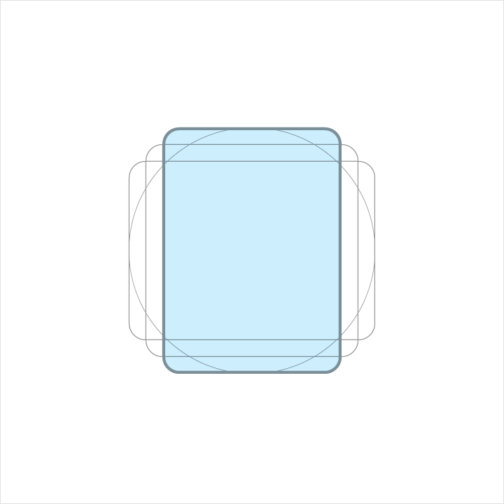
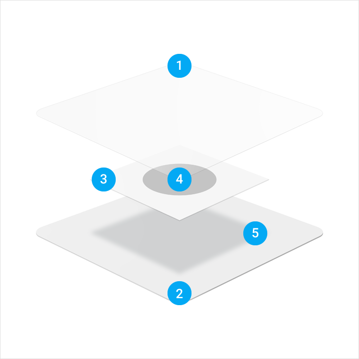
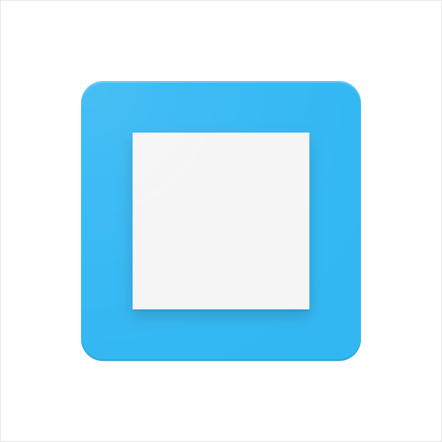
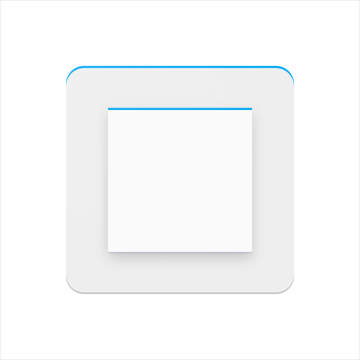
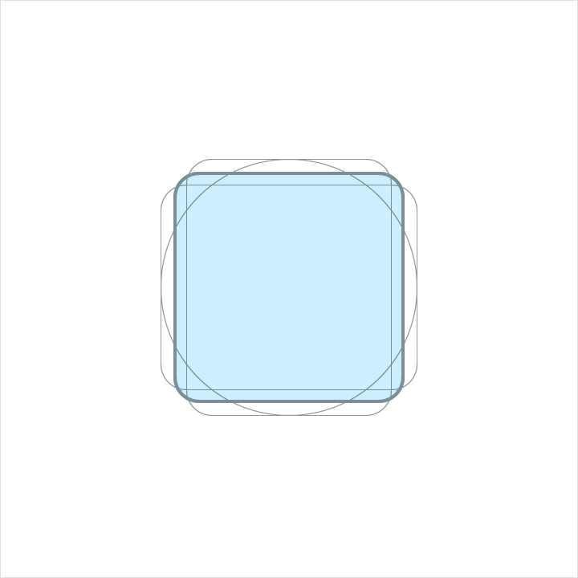
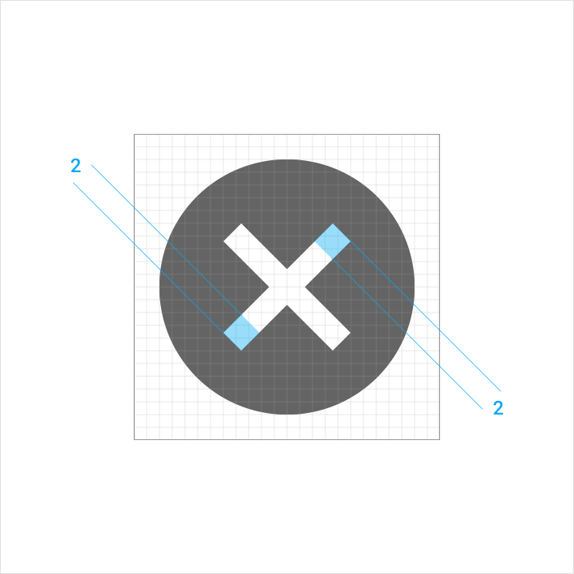

Product icons are the visual expression of a brand’s products, services, and tools. Simple, bold, and friendly, they communicate the core idea and intent of a product. While each product icon is visually distinct, all product icons for a given brand should be unified through concept and execution.
Product icons are an essential vehicle for communicating your brand. Using these guidelines as a starting point, make sure your product icon colors and other key elements reflect your brand identity.
Design approach
Product icon design is inspired by the tactile and physical quality of material. Each icon is cut, folded, and lit as paper would be, but represented by simple graphic elements. The quality of the material is sturdy, with clean folds and crisp edges. The matte-like finish interacts with light through subtle highlights and consistent shadows.
Physical prototype
Lighting study
Material prototype
Color study
Product icon grid
The product icon grid has been developed to facilitate consistency and establish a clear set of rules for the positioning of graphic elements. This standardization results in a flexible but coherent system.
Grid
Keylines
Keyline shapes
Keyline shapes are the foundation of the grid. By using these core shapes as guidelines, you can maintain a consistent visual proportion across related product icons.
Square
Height: 152
Width: 152
Circle
Diameter: 176

Vertical rectangle
Height: 176
Width: 128
Horizontal rectangle
Height:128
Width:176
DP unit grid
Device launchers display product icons at 48dp. When you create the icon, maintain the 48-unit measure, but scale it to 400% at 192 x 192 px.
By maintaining the unit ratio, you preserve sharp edges and correct alignment when the scale is reduced.
1:1 Unit grid
4:1 Unit grid
Geometry
Preset standards have been determined for specific keylines: circle, square, rectangle, orthogonals, and diagonals. This small palette of universal and simple elements has been developed to unify product icons and systemize their placement on the grid.
Product icon anatomy
Product icon anatomy describes the graphic elements that make up a product icon. The consistency of these elements across icons for a given brand is critical in maintaining a shared visual language. Familiarity with these elements makes it easier to understand characteristics of each logo and subtle differences between them. It will also help educate your eye to recognize the underlying structure of logo designs.
1. Finish
2. Material background
3. Material foreground
4. Color
5. Shadow
Components
Each component is positioned on top of the previous one, always viewed from straight above.

Construction perspective
An exploded perspective example illustrating the context of each component of the logo construction.

Material background
The back-most material element.
Material foreground
A material element raised above, and casting a shadow upon, the material background.
Spot color
Color applied to a small portion of an element.
Floodings
Color applied to an entire element, edge-to-edge.
Tinted edge
The top edge of a material element. A tint is the mixture of a color with white, which lightens the original color.
Shaded edge
The bottom edge of a material element. Shade is the mixture of a color with a darker hue, which darkens the original color.
Contact shadow
A soft shadow around all edges of a raised material element.
Finish
A soft tint above all elements to provide surface lighting, fading from upper-left to lower-right.
Product icon metrics
Lighting
Within the material environment, virtual lights illuminate the scene and allow objects to cast shadows. A top light cast on material elements creates a contact shadow while highlighting the top and bottom edges. An angled light reinforces the sense of surface across the elements.
Top
45º angle
Shadows
For a product icon, the top light from above casts a soft shadow surrounding an element lightly on the top and left. The shadow is slightly heavier below and to the right. This shadow is always contained within the icon’s silhouette.s
Drop shadow metrics
Mode: Normal
Opacity: 20%
X Offset: 0px
Y Offset: 6px
Blur: 6px
Color: Refer to Tint, shade and shadow values
Product icon metrics
Edge tint and shades
The top and bottom edges of material elements provide a sense of depth and surface. Material elements have a standard 1dp thickness. All edge distances are measured from an element's interior edge.
Tint highlights the top edge of all elements. The left, right, and bottom edges do not have a tint applied.
Shade darkens the bottom edge of all elements. The left, right, and top edges do not have a shade applied.

Tinted edge
Height: 1dp
Opacity: 20%
Color: White (#FFFFFF)
Shaded edge
Height: 1dp
Opacity: 20%
Color: Refer to Tint, shade and shadow values
Finish
The finish layer is a result of the virtual 45º light source. It extends from the top-left corner to the exterior edge of the icon’s silhouette. The finish is always contained within these boundaries.
Gradient metrics
Type: Radial
Angle: 45º
Color: White (#FFFFFF)
Midpoint Location: 33%
Slider 1
Opacity: 10%
Location: 0%
Slider 2
Opacity: 0%
Location: 100%
Tint, shade, and shadow values
Each color reacts differently when tints and shades are added. The color or every edge tint, edge shade, and shadow need to be adjusted for each color that lies behind it. To ensure color harmony, follow the appropriate value for each.
Product icon patterns
Influenced by the behavior of physical material, simple conventions provide a sense of surface and tactility. The interactions of material and color allow for numerous unique compositions.
Color
Color elements are flush to the paper’s surface.
Don’t embellish color elements with any edges or shadows.
Layer
Layered paper elements create depth, having edges and shadows.
Don’t exceed more than two layers. Having too many complicates the icon and lacks focus.
Dog-ear
A folder corner, or dog-ear, is used with forms associated with documents or traditional paper-based metaphors.
Don’t use a dog-ear treatment in the upper-left of an icon. The cast shadow from this position interrupts the harmony of the icon.
Elevate
Elevating a key material element atop a simple background silhouette focuses attention to the center.
Don’t crop elevated material elements within another shape.
Score
Scored material elements have the illusion of depth without losing their geometric form. Scores should be centered on symmetrical shapes.
Don’t use multiple scores, or position a score off-center.
Fold
Folded material elements are skewed, having greater dimension. Spot colors should be avoided, so as to avoid altering or misrepresenting key elements.
Overlap
Overlapped material elements create unique silhouettes. All elements, edges, and shadows are confined to the interior of the silhouette.
Don’t exceed more than two overlaps. Having too many complicates the icon and lacks focus.
Accordions
Accordion folded material elements are adjoined by a connecting fold, used to add dimension to a single material element.
Don’t exceed more than two accordion folds. Having too many complicates the icon and lacks focus.
Distort
Product icons should never be distorted or transformed. Elements should remain in their geometric form, and not be skewed, rotated, bowed, warped, or bent.
System icons
A system icon, or UI icon, symbolizes a command, file, device, or directory. System icons are also used to represent common actions like trash, print, and save.
The design of system icons is simple, modern, friendly, and sometimes quirky. Each icon is reduced to its minimal form, with every idea edited to its essence. The designs ensure readability and clarity even at small sizes.
Design Principles
Shapes are bold and geometric in execution.
A play on symmetry and consistency of the shape that constructs the icon gives it a unique quality, while keeping it simple and bold.
Simple
Intuitive
Actionable
Consistent
Grid, Proportion, and Size
DP unit grid
System icons are displayed at 24dp. When creating icons, it’s important to design at 100% scale for pixel-accuracy, while zooming in for precision.
100% scale
800% scale
Icon grid
The icon grid has been developed to facilitate consistency and establish a clear set of rules for the positioning of graphic elements. This standardization results in a flexible but coherent system.
Grid
Keylines
Content area
The content of an icon should remain inside of the live area. Content should only extend into the trim area if additional visual weight is needed. Do not place any part of the icon outside of the trim area.
Live area
Trim area
Keyline shapes
Keyline shapes are the foundation of the grid. By using these core shapes as guidelines, you can maintain a consistent visual proportion throughout the system icons.

Square
Height: 18px
Width: 18px
Circle
Diameter: 20px
Vertical rectangle
Height: 20px
Width: 16px
Horizontal rectangle
Height: 16px
Width: 20px
Geometry
Preset standards have been determined for specific keylines: circle, square, rectangle, orthogonals, and diagonals. This small palette of universal and simple elements has been developed to unify Google system icons and systemize their placement on the icon grid.
Construction
Composition
System icon anatomy
1. Stroke terminal
2. Corner
3. Counter area
4. Stroke
5. Counter stroke
6. Bounding area
Corners
Consistent corner radiuses are key to unifying the overall system icon family. A 2px corner radius is used on the silhouette form of the icon. Do not round the corners of strokes (shapes 2px wide or less).
Interior corners should be square. Do not round the corners of interior shapes.
Exterior corners
Interior corners
Strokes
Consistent stroke weights are key to unifying the overall system icon family. Maintain a 2px width for all stroke instances, including curves, angles, and both interior and exterior strokes.
Consistency
Curves and angles
Stroke terminal

Counter stroke
Optical corrections
Extreme scenarios that call for subtle tweaks add to the legibility of an icon. Instances where complex details are unavoidable require adjusting metrics.
If optical corrections are necessary, only use the consistent geometric forms all other icons are based upon. Don’t skew or distort the forms.
Complex
Small scale
Clearance
Adequate space around the icon is needed to allow for legibility and touch.
Clearance area
Placement
最佳做法
Consistency aids user comprehension of icons. Use the existing system icons whenever possible and across different applications.
Do use consistent stroke weights and squared stroke terminals.
Don’t use inconsistent stroke weights or rounded stroke terminals.
Do make icons appear front-facing and sturdy.
Don’t tilt, rotate, or make icons appear dimensional.
Do simplify icons for greater clarity and legibility.
Don’t be overly literal and avoid complex icons.
Do make icons graphic and bold.
Don’t use delicate, thin stroke weights.
Do use geometric, consistent shapes.
Don’t use gestural or loose organic shapes.
Do position icons “on pixel”—meaning the X and Y coordinates are integers and do not contain decimals.
Icons should have equal width and height (e.g. 24x24) to avoid distorting the icon.
Don’t place the icon on coordinate that is not “on pixel”.
Don’t distort the icon by having unequal width and height values.
色彩
The standard opacity for an active icon on a light background is 54% (#000000). An inactive icon, which is lower in the visual hierarchy, should have an opacity of 26% (#000000).
The standard opacity for an active icon on a dark background is 100% (#FFFFFF). An inactive icon, which is lower in the visual hierarchy, should have an opacity of 30% (#FFFFFF).